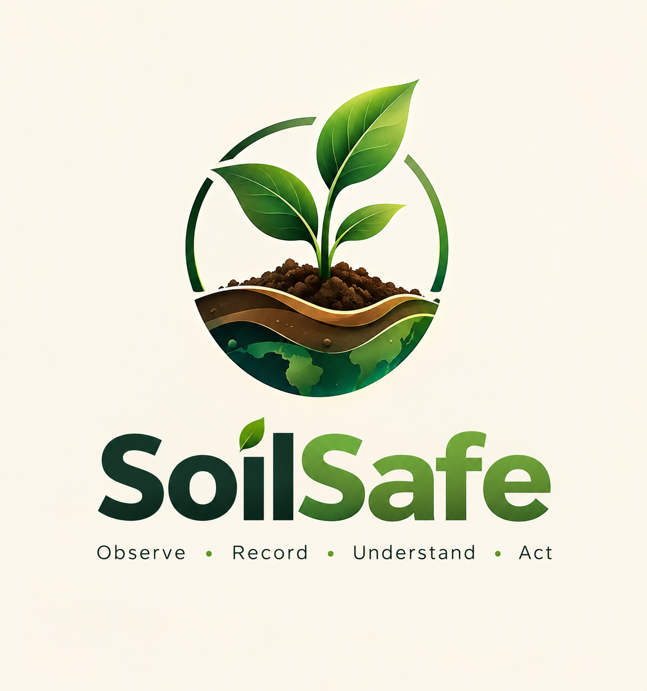

Industrial activity
Waste, spills or emissions can introduce metals and other chemicals.

SoilSafeHealthy soil is more than ground beneath our feet. It is a living system that supports food, water, biodiversity, and our future.
Soil pollution can occur when harmful substances accumulate at levels that may affect soil quality, organisms, ecosystems or human health.
Often rich in organic matter and biological activity. Pollution can affect soil organisms and plant growth depending on the contaminant and exposure.
Waste, spills or emissions can introduce metals and other chemicals.
Excessive or inappropriate pesticide and fertiliser use can affect soil.
Unmanaged waste, e-waste, oils and leaking storage can introduce pollutants.
Recognising a possible source is the first step—not proof that a site is contaminated.
Some industrial processes can release metals and other chemicals through waste, spills, or emissions.
POTENTIAL SOURCEExcessive or inappropriate use of pesticides and fertilisers may contribute to soil contamination.
USE RESPONSIBLYUnmanaged waste, e-waste, oils, and leaking storage can introduce pollutants into the environment.
PREVENT LEAKAGESoil conditions influence how substances behave. Their movement and availability depend on more than their presence alone.
pHCan change the solubility and mobility of some metals.
Organic matterCan bind some substances and change their availability.
Concentration & exposureHelp determine potential risk and the need for assessment.
Near neutralMany plants grow well in slightly acidic to neutral soil, but ideal pH varies by species and soil conditions.
Research figures are shown with their geography and reporting period so they are not mistaken for a measurement of all polluted land.
Increase in global pesticide use from 2000 to 2017.
FAO & UNEP · 2021Synthetic nitrogen fertilisers applied globally in 2018.
FAO & UNEP · 2021Confirmed contaminated sites reported in India.
CPCB · UPDATED MARCH 2025Probable contaminated sites reported in India.
CPCB · UPDATED MARCH 2025The CPCB report updated in March 2025 listed 103 confirmed and 93 probable contaminated sites, with remediation underway at 7 sites. These are reported site counts—not a measure of all polluted land in India.
Read CPCB report ↗Live browser-only analytics from observations submitted through this unified website.
A short animated explainer showing how SoilSafe connects observation, recording, review and protection.
Anyone can report a soil-related observation. Choose whether you are an LPU student or reporting from another place. SoilSafe organises observations for awareness and follow-up; it does not test soil or confirm contamination.
Records keep the language factual: what was seen, where it was seen and what level of follow-up is appropriate. The examples below are illustrative; live personal records appear after login.
Every live report receives a unique SoilSafe number such as SS-2026-000127. Sign in to see the report details and its current review status.
Review observations and the cautious first response suggested by SoilSafe. Reports are open to everyone — LPU students and people from other places.
Photo, location and description of what is visible.
Site inspection, sampling or expert review may be appropriate.
Contaminants and concentrations require appropriate testing.
Prevention starts with informed choices, safe handling and responsible reporting.
Separate waste, use approved disposal routes and never dump oils, batteries or chemicals onto land.
Follow product labels and expert guidance for fertilisers and pesticides; avoid excessive or improper use.
Document visible concerns safely. Potential contamination needs appropriate investigation and may need lab testing.
Share credible information, cite sources and encourage communities to protect soil and water together.
SoilSafe is an educational awareness and record-keeping prototype—not a pollution detector, laboratory service or environmental certification.
Figures and scientific explanations are grounded in published environmental evidence.
Sign in to submit observations, keep your records and follow review updates from any device.